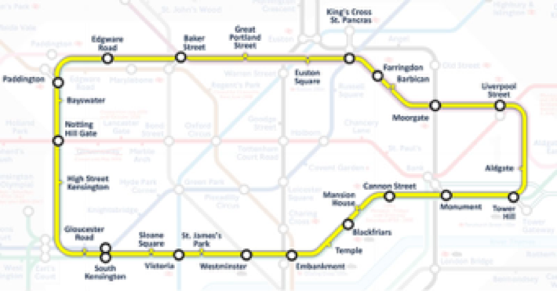

On weekdays, the Scattered Scientist goes to work along the circle line on the London Underground from Cannon Street station to Edgware Road station, and in the evening he goes back $($see the diagram$)$.

Entering the station, the Scientist sits down on the first train that arrives. It is known that in both directions the trains run at approximately equal intervals, and along the northern route $($via Farringdon$)$ the train goes from Cannon Street to Edgware Road or back in 17 minutes, and along the southern route $($via St James Park$)$ - 11 minutes. According to an old habit, the scientist always calculates everything. Once he calculated that, from many years of observation:
- the train going counter-clockwise, comes to Edgware Road on average 1 minute 15 seconds after the train going clockwise arrives. The same is true for Cannon Street.
- on a trip from home to work the Scientist spends an average of 1 minute less time than a trip home from work.
Find the mathematical expectation of the interval between trains going in one direction.
Let p be the probability that the Scientist gets on the train going clockwise. Then the mathematical expectation of time travelling from Cannon Street to Edgware Road is 11p + 17 $($1 - p$)$ = 17 - 6p. On the way back, the Edgware Road - Cannon Street mathematical expectation of travel time is 17p + 11 $($1-p$)$ = 11 + 6p. By the condition $($11 + 6p$)$ - $($17 - 6p$)$ = 1, whence p = 7/12. We denote the time interval between the trains as T. Then T $($1 - p$)$ = Y, where Y is the time between the arrival of the train which goes clockwise and the arrival of the train which goes anti-clockwise to the specified stations. Hence, ET = EY / 1-p = $5/4 \times 12/5$ = 3.
3 minutes.
3 points